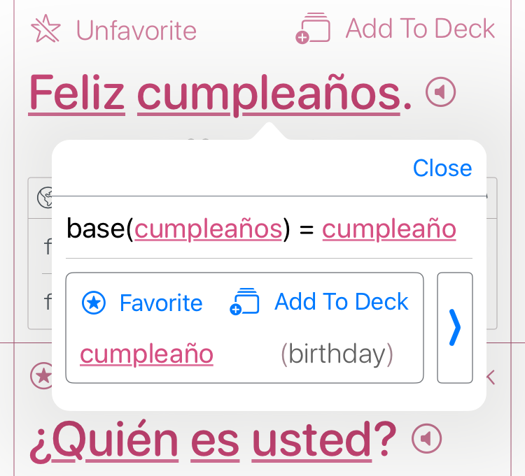

Subscript – A Freeform Note-Taking App
Freeform, Human-Centric, and Built from the Ground Up
Subscript was born out of frustration with the rigidity of existing note-taking apps. I
wanted a tool that respected the structure of serious, long-term note creation—especially for STEM content—and
preserved the human presence behind each note. What emerged was a freeform handwriting-based note-taking system
that emphasized authenticity, long-term readability, and device-independent rendering.
All input is stored in a scalable vector-based model space, making it
resolution-independent and suitable for export to PDF or web. Each note is composed of
entries—either structured headings or freeform strokes—recorded as a collection of stylus sample points. These
strokes are rendered using a customized Swift port of the perfect-freehand algorithm, with
user-defined pen tips, stroke widths, and color selections.
The system supports a semantic heading hierarchy (H1–H6), which
auto-generates a navigable table of contents. This design aligns with the philosophy of LaTeX—separating content
from presentation—while prioritizing a beautiful reading experience over time.
Subscript also captures something rare in today’s AI-saturated landscape: undeniable
human authorship. No part of the note-taking flow can be faked by automation. It’s handwriting,
structure, and thought—preserved faithfully and rendered precisely.
For a deeper look into the philosophy and design, watch the video demo.
Used in the Real World — Chemistry 1010 (Fall 2021)
Subscript wasn’t just a prototype it was my primary note-taking tool during an actual
college-level chemistry course. I used it to produce a complete, structured set of lecture notes for
Chemistry 1010 (Fall 2021), combining handwritten formulas, semantic headings, and responsive
layouts. The result is a document that remains readable, navigable, and presentation-ready years
after it was written.
The chemistry notes showcase Subscript’s ability to manage structured academic content over
time, preserving both spatial arrangement and semantic organization. This example is publicly available as a web
export:
→ View
the Chemistry 1010 Notes (Web Version)
My Bilingual Dictionary & Phrasebook App
App Overview
The Dictionary
The Phrasebook

Inside the 3in1Spanish Dataset Compiler
See my YouTube Video for
details with commentary.
What if generating a bilingual dictionary and phrasebook wasn't about writing static content by hand,
but compiling it — like code? That’s the idea behind my 3in1Spanish app, a fully offline-native
iOS/macOS app that bundles a dictionary, phrasebook, and flashcards into a single lightweight tool.
At its core is a dataset pipeline inspired by compiler design, not scraping or prompt spam. This post dives
into how the system works, what problems it solves, and why it’s built to scale.
Motivation
There are tons of language apps — but they usually either:
- Rely on huge editorial teams for content
- Depend on fragile scraping pipelines
- Require online access to fetch data
I wanted something different:
- Fully offline
- Fully scalable (10 → 10M entries)
- Generated programmatically
- Modular, inspectable, and cache-friendly
Thus: a compiler-style LLM pipeline.
Input: Raw Source Text (EPUBs)
The source input is clean digital books — primarily EPUBs. These are ZIP-archives of structured HTML chapters,
usually with cleaner markup than scraped websites.
I parse the HTML, normalize it, and feed it through deterministic preprocessors that extract usable text for
downstream phrase mining.
Architecture: A Compiler for Language Data
The pipeline has multiple stages, loosely inspired by compilers:
-
Preprocessing
- Extracts and cleans source sentences
- Normalizes punctuation, line breaks, headings
-
Phrase Mining
- LLM extracts semantically useful phrases (e.g. greetings, common patterns)
- Outputs structured JSON arrays
-
Metadata Generation
- For each phrase or word:
- English translation
- IPA + simplified pronunciation
- Grammar category
- Notes on silent letters or irregularities
- Regional variation info
- Syllabification (for TTS/fallback)
-
Categorization & Tagging
- LLM suggests category cluster (e.g. food, travel)
- Tag-based sorting for UI
-
Dictionary Compilation
- Lemmas + inflected forms
- Disambiguates homographs
- Long/short definition pairs
- Example usage with glosses
-
Flashcard Export
- JSON entries exported into spaced-repetition-ready format
Retry, Repair, and Idempotency
This isn’t just prompt → response → save.
The system validates LLM output against schemas. If JSON is malformed, it attempts:
- Auto-repair (via Mistral or system prompt reset)
- Conversational correction
- Retry with fallback prompt variants
Each content unit (phrase, word, definition) is identity-tracked, cached, and compiled independently. If you
delete or edit an entry, only its downstream dependencies are invalidated.
Output: SQLite Database
Final output is stored as a SQLite DB and bundled into the iOS/macOS app. This allows:
- Instant local access
- No network dependencies
- App-side fallbacks (e.g. show alt forms if IPA missing)
Stack
- Rust — pipeline logic, prompt orchestration, compilation
- Swift/SwiftUI — app frontend
- SQLite — offline dataset storage
- LLMs — OpenAI GPT-3.5, Mistral, Claude (experimental)
- Prompt DSL — an XML-inspired macro system for structured LLM interactions
Generalization Potential
Although I built this for Spanish-English, the pipeline is language-agnostic. With minor changes, it could
generate:
- Medical glossaries
- Legal term dictionaries
- Niche phrasebooks (e.g. aviation, military, religious)
- Low-resource language datasets
It’s not just a phrasebook — it’s a general-purpose bilingual content compiler.
Status & Future
The current app works. The dataset pipeline is fully operational and idempotent. The UI is lightweight but
serviceable.
Next steps:
- Polish flashcard interaction
- Add fuzzy search + transliteration
- Expand prompt set for rarer parts of speech
- Expose the compiler as a CLI tool
Interested?
If you work in:
- EdTech
- Localization
- NLP toolchains
- AI-powered language learning
…then I’d love to connect.
I'm especially interested in contract or freelance opportunities where this infrastructure — or its
generalizations — can save teams time and money on multilingual content.